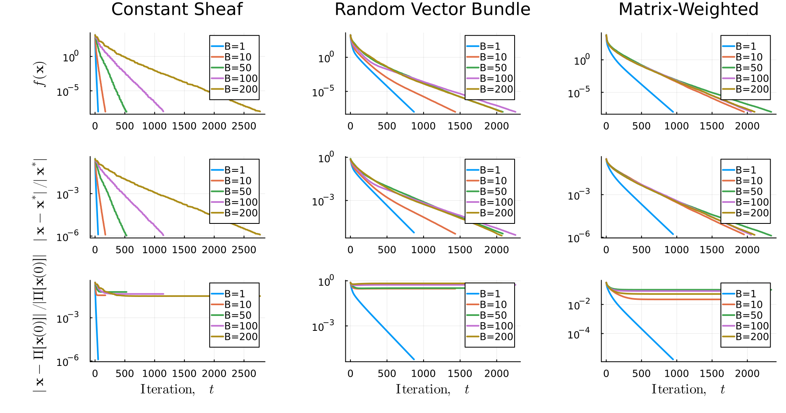

Restriction Map Type Comparison
The structure of a sheaf's restriction maps determines how information is aggregated across edges. This experiment compares three sheaf types on a 4-regular graph with $n=20$ agents and stalk dimension 4, all diffused with the same mixture-model asynchronous schedule ($B=200$):
- Constant sheaf: identity restriction maps — each vertex sees the same information at both endpoints of each edge. Global sections are constant signals.
- Random vector bundle: semi-orthogonal restriction maps — models a principal bundle where the fiber is rotated across each edge.
- Matrix-weighted: restriction maps derived from random PD/PSD matrices — models asymmetric information blending, relevant to network opinion dynamics.
For each sheaf type we plot energy $f(\mathbf{x}(t))$, relative error $\|\mathbf{x}(t) - \mathbf{x}^*\| / \|\mathbf{x}^*\|$, and orthogonal projection error $\|\mathbf{x}(t) - \Pi_\Gamma[\mathbf{x}(0)]\| / \|\Pi_\Gamma[\mathbf{x}(0)]\|$.
Data source: Pre-generated by docs/scripts/acc26_experiments.jl.
using CellularSheaves
using Plots
using LaTeXStrings
const data_root = joinpath(@__DIR__, "../../../data/asynch/rm_experiment")
subsample(v, n=2000) = v[1:max(1, length(v) ÷ n):end]
Bs = [1, 10, 50, 100, 200]
labels = ["B=1", "B=10", "B=50", "B=100", "B=200"]
types = ["constant_sheaf", "vector_bundle", "matrix_weighted"]
type_titles = ["Constant Sheaf", "Random Vector Bundle", "Matrix-Weighted"]
function load_curves(subdir, prefix)
map(1:length(Bs)) do i
path = joinpath(data_root, subdir, "$(prefix)$i.csv")
isfile(path) ? subsample(vec(load_trajectory(path))) : Float64[]
end
end
loss_plots = map(zip(types, type_titles)) do (t, title)
plt = empty_experiment_plot(; title=title)
for (i, (curves, lab)) in enumerate(zip(load_curves(t, "loss"), labels))
isempty(curves) && continue
plot_log_loss_curve!(plt, curves, lab)
end
plt
end
error_plots = map(types) do t
plt = empty_experiment_plot()
for (curves, lab) in zip(load_curves(t, "error"), labels)
isempty(curves) && continue
plot_log_loss_curve!(plt, curves, lab)
end
plt
end
proj_plots = map(types) do t
plt = empty_experiment_plot(; xlabel=L"\mathrm{Iteration},\quad t")
for (curves, lab) in zip(load_curves(t, "proj_error"), labels)
isempty(curves) && continue
plot_log_loss_curve!(plt, curves, lab)
end
plt
end
l = @layout [a b c; d e f; g h i]
plot(
loss_plots..., error_plots..., proj_plots...,
layout=l,
size=(1900, 1000),
ylabel=[L"f(\mathbf{x})" "" "" L"\|\mathbf{x}-\mathbf{x}^*\|/\|\mathbf{x}^*\|" "" "" L"\|\mathbf{x}-\Pi[\mathbf{x}(0)]\|/\|\Pi[\mathbf{x}(0)]\|" "" ""],
legend=:topright,
)